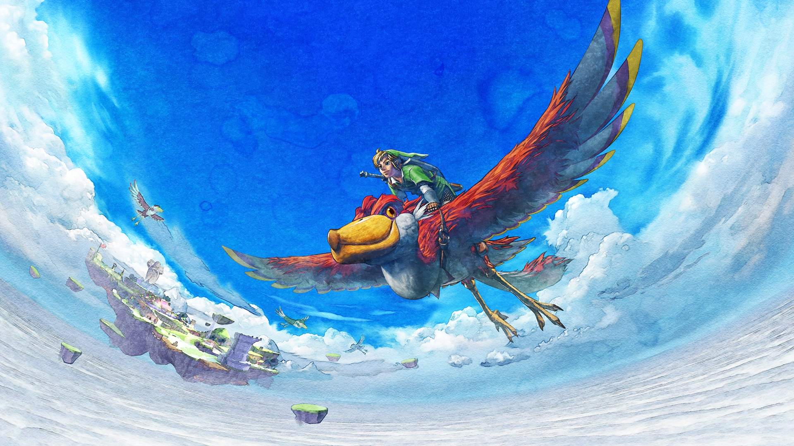
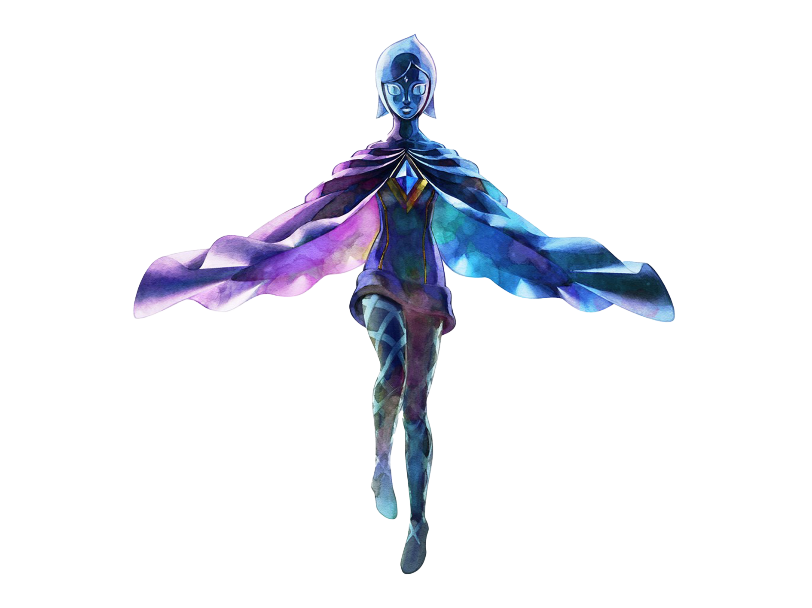
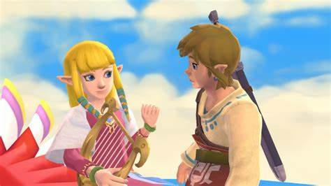
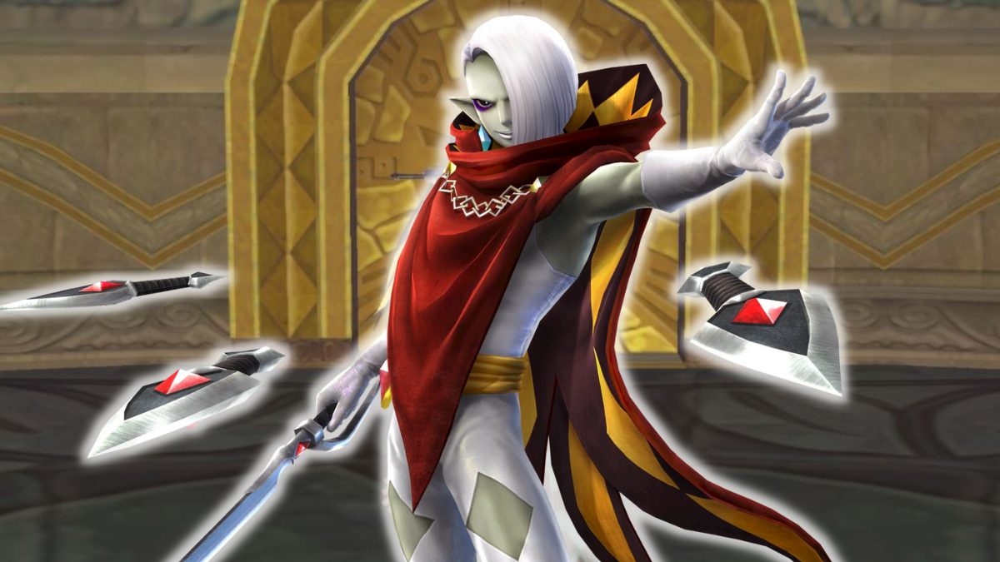
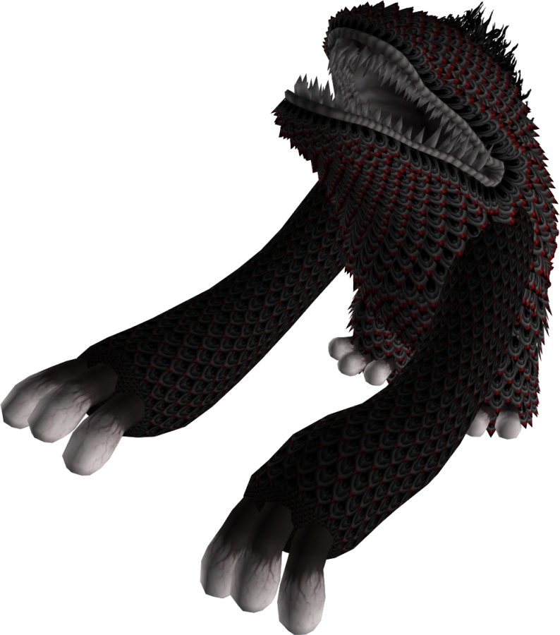
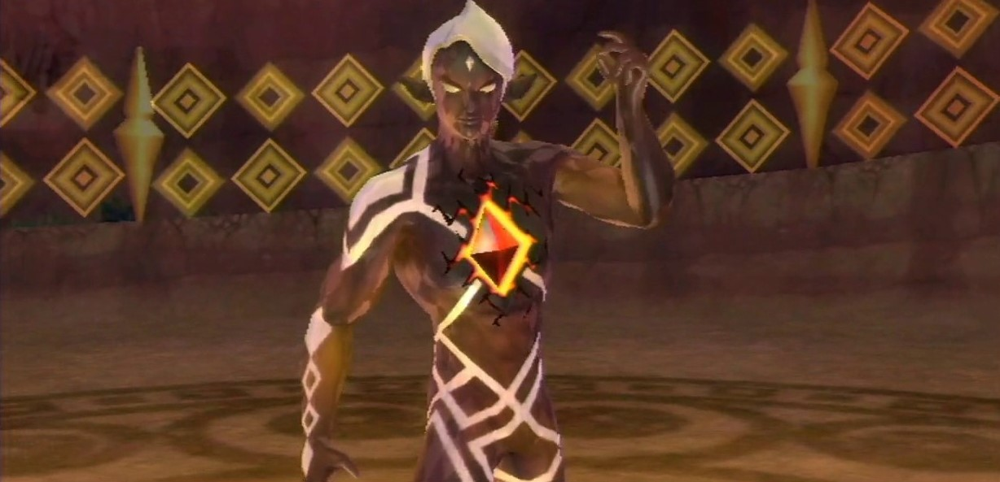
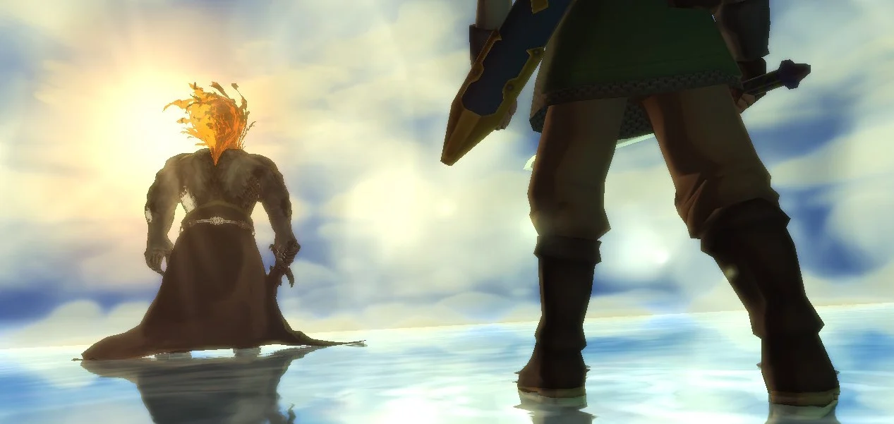
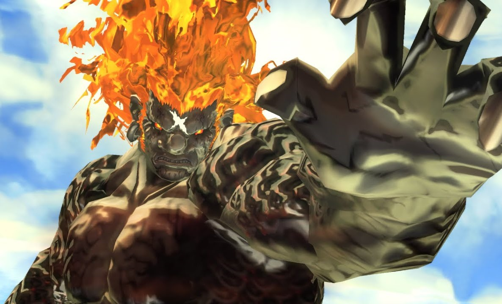
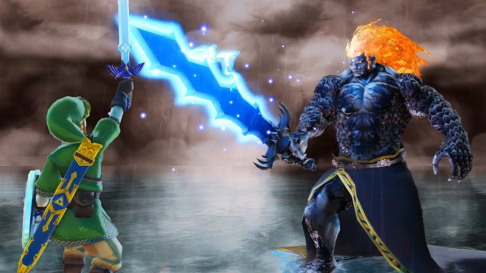
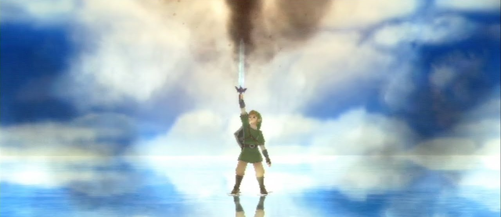

La légende raconte qu'une déesse éleva une partie des terres vers les cieux ainsi que les humains afin de les protéger des ténèbres. Link vit sur cette île volante du nom de Célesbourg. Après une cérémonie visant à poursuivre ses études pour devenir chevalier, son amie d'enfance, Zelda, est emportée par une tornade. Link, peu de temps après, fait la découverte d'une épée mystérieuse, la Skyward Sword. Il comprend dès lors que celle-ci est habitée par un esprit féminin. Cet esprit nommé Fay a été envoyé par la Déesse pour guider l'Élu dans sa mission. Apprenant l'existence d'un monde en dessous de l'île, Link part à sa découverte. Il y découvre un monde d'une grande beauté, mais teinté par la présence des Ténèbres, un monde où il doit retrouver Zelda.



Ghirahim, le Monarque Démoniaque, n'aura de cesse de provoquer des combats ou même de se battre pour ralentir Link et ainsi gagner du temps afin de localiser Zelda. C'est un démon, et tout comme Fay, l'esprit d'une épée qui a pour maître le seigneur démoniaque, l'Avatar du Néant. Ghirahim aspire à libérer son maître de la prison qui le retient depuis des siècles. L'Avatar du Néant a été autrefois combattu et enfermé par la déesse. Il parvient tout de même à briser le sceau à plusieurs reprises, apparaissant sous la forme d'un monstre hideux, le Banni , que Link doit combattre et sceller à nouveau de nombreuses fois.



Au terme de son aventure à travers les différentes régions du monde, Link finit par vaincre définitivement Ghirahim, qui libère son maître, l'Avatar du Néant, aussi appelé Maître du Mal. Celui-ci rend à Ghirahim sa vraie forme, celle d'une épée démoniaque pour obtenir sa force. Link l'affronte dans les limbes, et au terme d’un combat épique, le tue. Mais l'Avatar du Néant lance une malédiction sur les descendants de Link et Zelda, promettant que l’'incarnation de sa haine les poursuivra pour l'éternité.



